Introduction
This is a responsive web page that showcases a selection of Google Fonts. The page uses an on-load keyframe animation and, for on-scroll animations, the AOS Javascript library from Michal Snik. You can display a finished version of this project on GitHub by clicking the image below.

You can view the HTML and CSS project files on this CodePen.
Learning Goals
At the end of this Chapter you will be able to:
- Add a selection of background colours to div containers on a web page.
- Add a drop-shadow effect to a container div.
- Add a selection of Google Fonts, with appropriate styles and weights, to headings and paragraphs.
- Add an on-load animation effect to an element on a web page.
- Add an scroll animation effect to selected elements on a web page.
- Validate HTML and CSS files.
- Update title, description, keywords and author meta tags.
- Add Google Analytics tracking to a web page.
- Upload website files and folders to GitHub.
Project folders and files
Your first step is to create on your computer a folder that will store the HTML file, CSS file and JavaScript file needed to complete this project.
- If a folder named websites does not already exist on your computer, create it now.
- Inside the websites folder, create the following sub-folders:
C:\websites\animation
C:\websites\animation\assets\css
C:\websites\animation\assets\js

- Using Sublime Text, Microsoft Visual Studio Code or other text editor, create a new, empty file by choosing the File | New File command.
 A new file is created in a tab of Sublime Text named 'untitled'.
A new file is created in a tab of Sublime Text named 'untitled'.

- Use the File | Save As command to save the new file with the following name, and place it in this folder.
C:\websites\animation\index.html
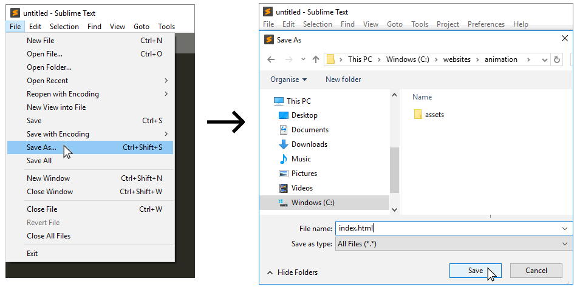
- Repeat the above step to create a second, new, blank file with your text editor. Using the File | Save As command, save the new file with the following name, and place it in this folder.
C:\websites\animation\css\animation.css
- Open the following CodePen by clicking the Edit on CodePen option at the top-right.
See the Pen gEBwZM by Brendan Munnelly (@brendanmun) on CodePen.
- From the HTML section at left-side of the CodePen window, select and copy all the content. The quickest way to do this is to:
- Click once with the mouse anywhere in the HTML section.
- On your keyboard, hold down the Ctrl key and press the letter a (for all).
- Paste the copied HTML content into the new index.html file you have just created in Sublime Text, and save the file.
- From the CSS section at centre of the CodePen window, select and copy all the content.
- Paste the copied CSS content into the new animation.css file you have just created in Sublime Text, and save the file.
The HTML file will be at the following location on a Windows PC.
file:///C:/websites/animation/index.html
In your web browser, the web page will look like that below.
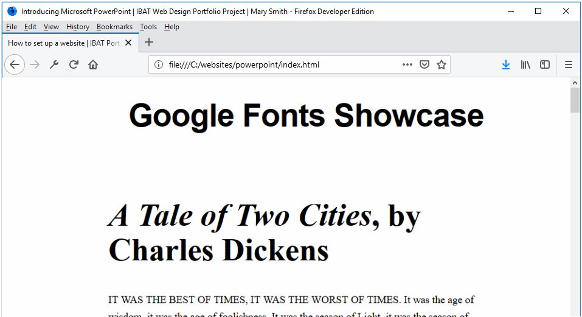
Let's examine the contents of the two files – the index.html web page and the animation.css stylesheet.
When you look inside the index.html you can see six 'boxes' of content. Each 'box' is wrapped in a <div> and each <div> has the same class name of container.

At the top of the index.html file is a <h1> main heading.
From the animation.css stylesheet, you can see that the h1 heading is centered and bold. For desktop screens, its font-size is 54px. For mobiles the font-size of h1 is reduced 36px. It also has top, right, bottom and left margins that are different for desktop and mobile screens.
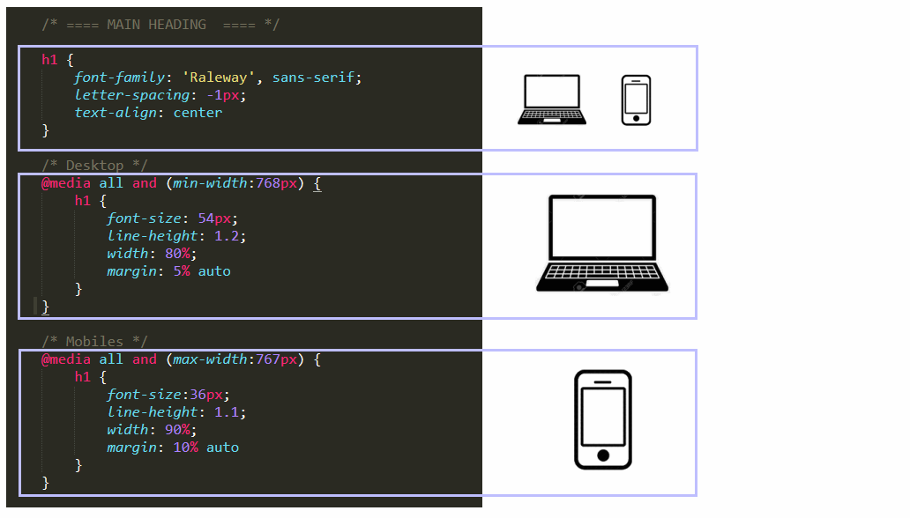
Also in the animation.css file, you can see that the .container class has margin values that create 'whitespace' at the left, right and bottom of each box, and also padding values that prevent the box content from bleeding against the box edges.
@media all and (min-width:768px) {
.container {
width: 60%;
margin: 0 auto 6% auto;
padding: 3% 5% 3% 5%;
}
}
@media all and (max-width:767px) {
.container {
width: 80%;
margin: 0 auto 10% auto;
padding: 5% 6% 5% 6%;
}
}
In the index.html file, parts of the <h2> sub-headings are in bold and italic, and parts of the <p> text paragraphs are in bold or italic.
<h2><i>A Tale of Two Cities</i>, by Charles Dickens</h2>
....
<p><b>It was the spring of hope, ... </b></p>
<p><i>We had everything before us, ...</i></p>
It is important, therefore, that when you select Google Fonts later in this project, you include the bold and italic font weight and styles
Under the <h2> sub-heading in each 'box' within the index.html file, the first sentence of the first paragraph is wrapped in an inline <span> tag named uppercase.
<p><span class=uppercase">It was the best of times, it was the worst of times.</span>.
It was the age of wisdom, it was the age of foolishness. It was the season of Light,
it was the season of Darkness.<p>
In the stylesheet, you can see that this selector ensures that text it contains is always displayed in UPPERCASE characters.
.container p { font-weight: normal }
.container p.uppercase { text-transform: uppercase }
Change the background colour of the page
Let's begin with an easy task: changing the background colour of the entire web page.
- Display the stylesheet file animation.css in your text editor.
- Under the UTILITY CLASS section near the top of this file, click on a blank line, press ENTER a few times, and add the following.
.img-fluid { width: 100%; height: auto }
- Save the CSS file and, in your web browser, view the effect on the HTML file. You should see that the background colour of the web page has changed from white to salmon pink.
Add background colour classes to the six container divs
In the animation.css file are six selectors that each performs only one task: they add a background-color. They have class names such as .bg-purple, .bg-blue and so on. Let's apply these six selectors, one-by-one, to the six 'boxes' in the web page.
- In your HTML file, add these classes to the six containers as follows:
<div class="container bg-purple">
...
</div>
<div class="container bg-blue">
...
</div>
<div class="container bg-pink">
...
</div>
<div class="container bg-black">
...
</div>
<div class="container bg-brown">
...
</div>
<div class="container bg-yellow">
...
</div>
- Save your CSS file, and, in your web browser, view the effect on the HTML file of your CSS colour changes. You should notice two changes:
- The six containers all now have a different background colour.
- The <h2> sub-headings and <p> paragraph text within the first three containers are displayed in different Google fonts. This because of the following selectors contained in the CSS file, as you can see below.
.bg-purple h2, .bg-purple p { font-family: 'PT Serif', sans-serif }
.bg-blue h2, .bg-blue p { font-family: 'Raleway', sans-serif }
.bg-pink h2, .bg-pink p { font-family: 'Playfair Display', serif }
Also, in the <head> section of your HTML file, you can see stylesheets for the three fonts – PT Serif, Raleway, and Playfair Display – imported from Google.
<link href="https://fonts.googleapis.com/css?family=PT+Serif:400,400i,700,700i" rel=stylesheet">
<link href="https://fonts.googleapis.com/css?family=Raleway:500,500i,700,700i" rel="stylesheet">
<link href="https://fonts.googleapis.com/css?family=Playfair+Display:400,400i,700,700i" rel="stylesheet">
Later in this project you will import three more Google Fonts to style the content of the final three of the six containers.
- Next, let's add a drop-shadow effect to all six containers.
.container { box-shadow: 7px 7px 5px #808080 }
- Save the CSS file, and in your web browser, view the effect on your HTML page.
Change the container headings and text colours
The stylesheet does not set any font-color for the <h1> main heading, <h2> sub-headings or <p> text paragraphs for the page content. As a result, the CSS applies the default colour of black (#000) to all these elements. Because the black text is difficult to read in the containers that now have coloured backgrounds, let's change this as follows.
- In the CSS file, above the section named GOOGLE FONTS, and add the following lines of code.
.container h2, .container p { color: #fff }
- Save the CSS file, and in your web browser, view the effect on your HTML page.
- It's now easier to read the content of the first five boxes. But, in the last box with its yellow background colour, the sub-headings and paragraphs were more readable when they were coloured black. So, add the following line to your CSS file.
.container h2, .container p { color: #fff }
.bg-yellow h2, .bg-yellow p { color: #000 }
- Save the CSS file, and in your web browser, view the effect on your HTML page.
Add three Google Fonts
In this next step, you will add three more Google Fonts to the three already specified in the HTML and CSS files. These will be Roboto Condensed, Merriweather and Source Sans Pro. Follow the steps below.
- Go to the Google Fonts website at https://fonts.google.com.
- In the Search Box at the upper-right corner, type Roboto Condensed.

- Roboto Condensed appears as the first font listed. Click the plus (+) icon beside its name.

- Repeat the above steps for two more fonts: Merriweather and Source Sans Pro. In each case, type the name of the font in the Search box, and then click the plus (+) icon on the search results screen.
- At the bottom of the Google Fonts screen you can see a black bar. This is called the 'font drawer.' After selecting the three fonts, the font drawer should look as shown below
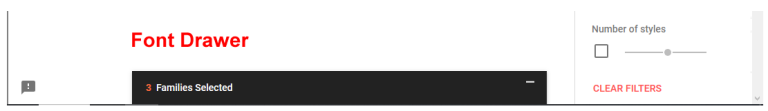
Click on the font drawer to open it. The font drawer should now look as follows.
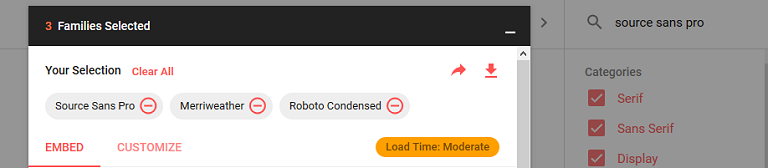
- Next, click the Customize tab.
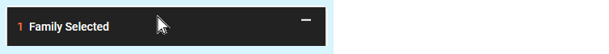
- For each of your selected three fonts, click to select two font styles (regular and italic) and two font-weights (300 and 700) as shown below.
 Note that, in CSS, font-weight: 300 is the same as font-weight: normal, and font-weight: 700 is the same as font-weight: bold.
Note that, in CSS, font-weight: 300 is the same as font-weight: normal, and font-weight: 700 is the same as font-weight: bold.
- You have now selected all three Google Fonts you want for your project, and you have selected which styles and weights of those fonts you want to use. Your next steps are to:
- Copy-and-paste the three font stylesheets into the <head> section of your HTML file.
- Update the relevant font-family styles in your CSS file.
- On the Google Fonts screen, click the Embed tab at the top of the open font drawer. It should look as follows.
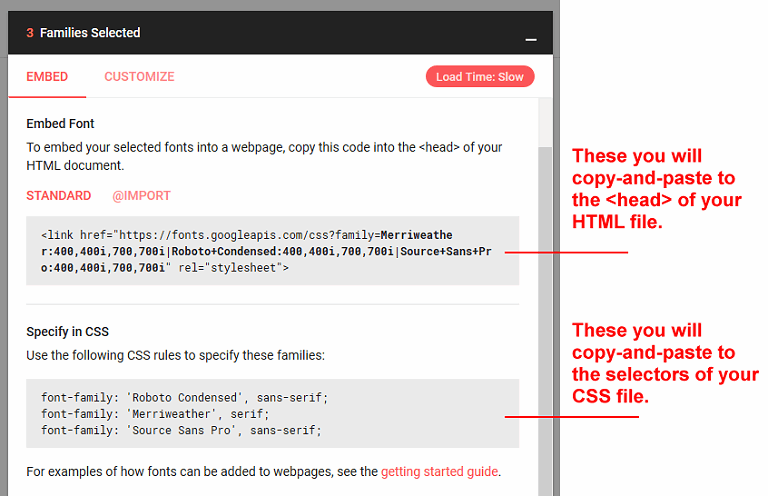
- Copy the top section from Google Fonts, switch to Sublime Text. In your index.html file, just before the closing </head> tag, paste the three lines.

Each line is a link to a font stylesheet stored on Google's webservers.
<link href="https://fonts.googleapis.com/css?family=
Merriweather:400,400i,700,700i|
Roboto+Condensed:400,400i,700,700i|
Source+Sans+Pro:400,400i,700,700i" rel="stylesheet">
</head>
- In your animate.css file, in the GOOGLE FONTS section, paste in the three new font styles under the three already present in the CSS
.bg-purple h2, .bg-purple p { font-family: 'PT Serif', sans-serif; }
.bg-blue h2, .bg-blue p { font-family: 'Raleway', sans-serif; }
.bg-pink h2, .bg-pink p { font-family: 'Playfair Display', serif }
.bg-black h2, .bg-black p { font-family: 'Roboto Condensed', sans-serif }
.bg-brown h2, .bg-brown p { font-family: 'Merriweather', serif; }
.bg-yellow h2, .bg-yellow p { font-family: 'Source Sans Pro', sans-serif }
- Save your HTML and CSS files, and view the web page in your browser.
The three CSS selectors of .bg-black, .bg-brown and .bg-yellow should now be associated with the three Google Fonts of Roboto Condensed, Merriweather and Source Sans Pro.
As a result, the content of the 'boxes' with these background colours should be displayed in these fonts.
Check that the fonts display correctly before moving on to the next step of this project.
Add an on-load animation to the web page
In this section, you will add an animation effect to the main <h1> heading that appears whenever the web page is loaded. To generate the CSS code required for the animation effect, you will use the Animista website created by Ana Travas.
On-load animations are generally applied to elements located at the top of the web page. This is because the top of the web page is typically the only part visible to the user when they load the page.
- Go to this web page.
Animista
and click the Try me button.
- Across the top of the screen you can see a draggable range of main options in white text against a black background. For each of these options, you choose from a wide variety of sub-options.

- In the main top menu, click the Entrances option. Next, click the red circle containing the Slide in sub-option. Ensure the Slide-in-top sub-sub-option is selected.
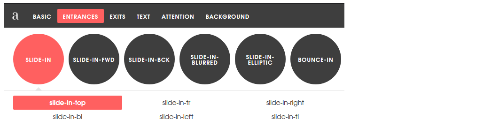
- At the right of the screen, click the {*} icon to display the CSS code that Animista has created for you.

- With the Autoprefixer option selected, click the Copy Class button and paste the text at the bottom of your animista.css file.
- Return to the Animista screen, click the Copy Keyframes button, and also paste that text at the bottom of your animista.css file.
- You next need to apply the .slide-in-top selector from your CSS file to an element in your web page. Switch to your HTML file and add this class to the main heading h1 element as shown below.
<body>
<h1 class="slide-in-top">Google Fonts Showcase</h1>
- Save the HTML file, and in your web browser, reload the page to view animation effect.
- Let's reduce the extent of the animation. In your CSS file, edit the keyframes code by reducing the value of 1000px to 200px as follows.
0% {
-webkit-transform: translateY(-200px);
transform: translateY(-200px);
opacity: 0;
}
...
0% {
-webkit-transform: translateY(-200px);
transform: translateY(-200px);
opacity: 0;
}
- Again, save the HTML file, and in your web browser, reload the page to view animation effect.
Add an on-scroll animation to the web page
In this section, you will add an animation effect to the 'boxes of fonts' that is displayed whenever the user scrolls down through the web page. You will not apply this effect to the first box, only to the remaining five
To generate the effect, you will use the AOS CSS file and Javascript code created by Michal Snik.
- Go to this web page of GitHub.
AOS On Scroll Library
- Got to the bottom of the page. Under the heading CDN Sources, copy the link to the AOS stylesheet file and paste it into the Head section of your web page as shown below.
<link href="https://unpkg.com/aos@2.3.1/dist/aos.css" rel="stylesheet">
</head>
- Next, copy the link to the AOS JavaScript file and paste it at the bottom of your web page as shown below.
<script src="https://unpkg.com/aos@2.3.1/dist/aos.js"></script>
<script>AOS.init();</script>
You now have linked your web page to the two files needed for the on-scroll animation effect to work. You next need to decide:
- Which of the many animation effects you wish to use. As you can see from the AOS Home Page, there are many to choose from. Examples include fade-up, flip-right and zoom-in-left.
- Which element(s) of your web page you want to apply the selected effect(s) to.
In this project, you will use the fade-up effect an apply to the 'box' divs, beginning with the second one as shown below.
<div class="container bg-blue" data-aos="fade-up" data-aos-duration="1200">
- Save the HTML file and verify that the smooth-scrolling effect works correctly.
Download the on-scroll animation files
In this step you will download to your computer the CSS and JS files you used to create the on-scroll animation effects in the previous step of the project above.
- Go to this address in your web browser
https://unpkg.com/aos@2.3.1/dist/aos.css
- Right-click anywhere on the file displayed in your web browser. From the pop-up menu shown, choose Save Page As... (Firefox) or Save page as... (Chrome), and save the CSS file with this name to this location on your computer.
C:\websites\animation\assets\css\aos.css
- Go to this address in your web browser
https://unpkg.com/aos@2.3.1/dist/aos.js
- Right-click on the displayed file in your browser window, right-click on it, and save the JS file with this name to this location on your computer.
C:\websites\animation\assets\js\aos.js
- In your HTML file, edit the links to the CSS and JS files as follows.
<link href="assets/css/aos.css" rel="stylesheet">
<script src="assets/js/aos.js"></script>
<script>AOS.init();</script>
Update the meta tags
In the <head> of your web page, within the <title> and <author> meta tags, is the name 'Mary Smith.' Replace this with your own name, and save the HTML file.
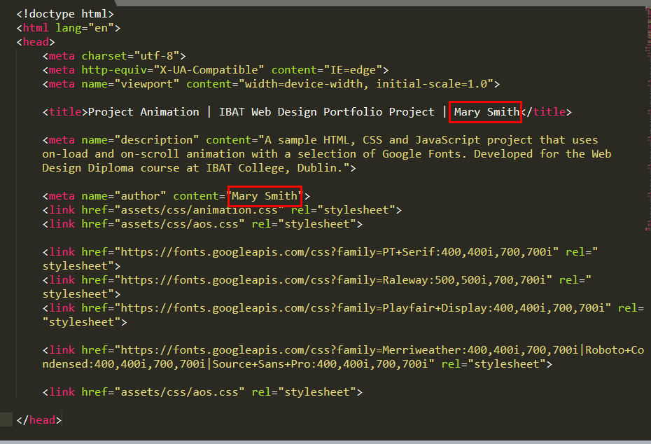
Add your Google Analytics tracking code
Near the top of your HTML file, just before the closing </head> tag, paste your website's unique tracking code from Google Analytics.

Each Google Tracking Code will have a unique ID in its first and last line. When finished, save the HTML file.
Validate your HTML file
To check your HTML is correct, use the official W3C Markup Validation Service. Follow these steps.
- Go to this web page: https://validator.w3.org.
- Click the Validate by Direct Input tab.

- Copy and paste your HTML file into the box named Enter the Markup to validate.
- Click the Check button.
- You should see only the following error.
 Open a new tab in your web browser, and in Google Search, type in and search for the following:
Illegal character in query: | is not allowed
The first search results you should see are from a website named Stack Overflow. This is a free question-and-answer service for all types of software issues, including problems related to HTML and CSS.
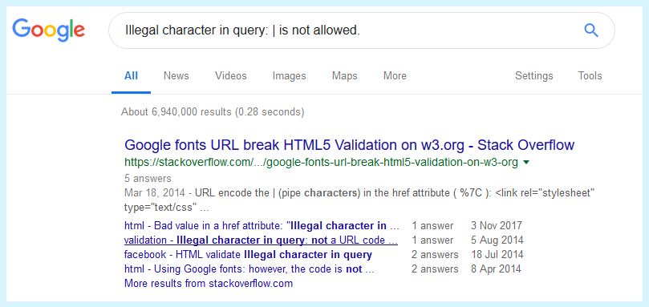
Open a new tab in your web browser, and in Google Search, type in and search for the following:
Illegal character in query: | is not allowed
The first search results you should see are from a website named Stack Overflow. This is a free question-and-answer service for all types of software issues, including problems related to HTML and CSS.
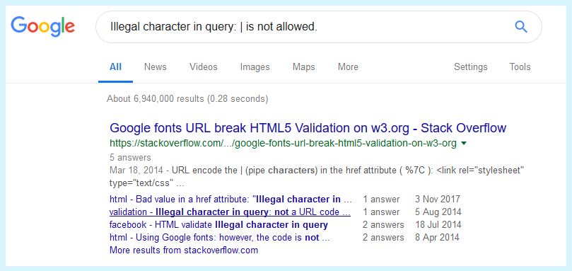
- When you read through the answers on Stack Overflow, you will see that you need to replace the invalid character (|) with %7C. Return to your index.html file, and edit the Google Fonts line in the <head> as shown below.
<link href="https://fonts.googleapis.com/css?family=
Merriweather:400,400i,700,700i%7CRoboto+Condensed:400,400i,700,700i%7CSource+Sans+Pro:400,400i,700,700i" rel="stylesheet">
</head>
- If you see any further errors, return to your index.html file in Sublime Text, fix the errors, save the file, and copy the entire file again.
In the HTML Validator, click the Back button of your web browser to again display the Validate by Direct Input tab. Click once in the tab and paste in your corrected HTML file. Your new, pasted-in file will replace the earlier version. Finally, click the Check button.
Validate your CSS file
To check your CSS is correct, use the official W3C CSS Validation Service. Follow these steps.
- Go to this web page: https://jigsaw.w3.org/css-validator.
- Click the By direct input tab.

- Copy and paste your CSS file into the box named Enter the CSS you would like validated.
- Click the Check button.
- If you see any errors, return to your animation.css file in Sublime Text, fix the errors, save the file, and copy the entire file again.
In the CSS Validator, click the Back button of your web browser to again display the By direct input tab. Click once in the tab and paste in your corrected CSS file. Your new, pasted-in file will replace the earlier version. Finally, click the Check button.
Upload your project to GitHub
The final step is to upload your project to GitHub. Follow these steps.
- Sign into your account at GitHub.com. At the left of the screen, you can see a list of your repositories.

- On your GitHub home page, create a new repository that will be the folder for hosting this project. You can create a repository in either of two ways:
- At the top of your repository list at the left of the screen, click the New button.
- Near the centre of the screen, click the Start a project button.

- On the next screen displayed, enter the name of animation, select the options below, and click the Create repository button.
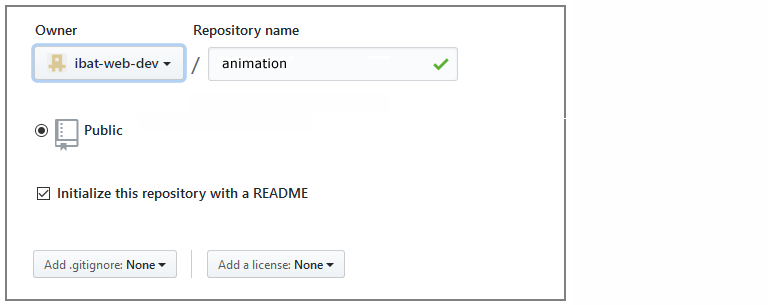
- You are now shown the home screen for your new repository. Across the middle of this screen is a row of options like that shown below.
 Click the dropdown list named Branch: master. If a branch named gh-pages is listed, select it. If does not already exist, in the box type, gh-pages, and then click under it to confirm.
Click the dropdown list named Branch: master. If a branch named gh-pages is listed, select it. If does not already exist, in the box type, gh-pages, and then click under it to confirm.
 You must use this 'gh-pages' branch (and not the 'master' branch) for all future uploads to your animation repository.
You must use this 'gh-pages' branch (and not the 'master' branch) for all future uploads to your animation repository.
 You must use this 'gh-pages' branch (and not the 'master' branch) for all uploads to your animation repository.
Note that in future, when you click the animation repository, the 'master' branch will be selected by default. So, before uploading files or folders to the animation repository, you must click the dropdown list and select the 'gh-pages' branch instead.
You must use this 'gh-pages' branch (and not the 'master' branch) for all uploads to your animation repository.
Note that in future, when you click the animation repository, the 'master' branch will be selected by default. So, before uploading files or folders to the animation repository, you must click the dropdown list and select the 'gh-pages' branch instead.
- From within the animation repository, click the Upload files button.
 Now, drag-and-drop the following file and folder to upload them to your GitHub account.
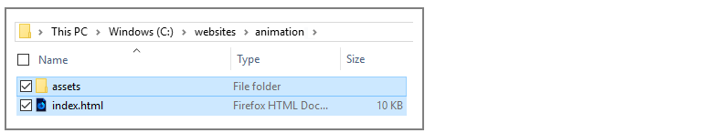
Now, drag-and-drop the following file and folder to upload them to your GitHub account.
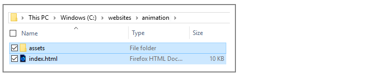
- After uploading the files, scroll down to the bottom of the screen, enter a short message in the Commit changes box and click the Commit changes button.
Your website is now published on GitHub at a web address similar to the following, where username is the username you have chosen for your GitHub account:
https://username.github.io/animation/index.html
or, simply:
https://username.github.io/animation
It may take a few minutes for your uploaded files to appear on GitHub.
Return to the Web Projects Main Page.